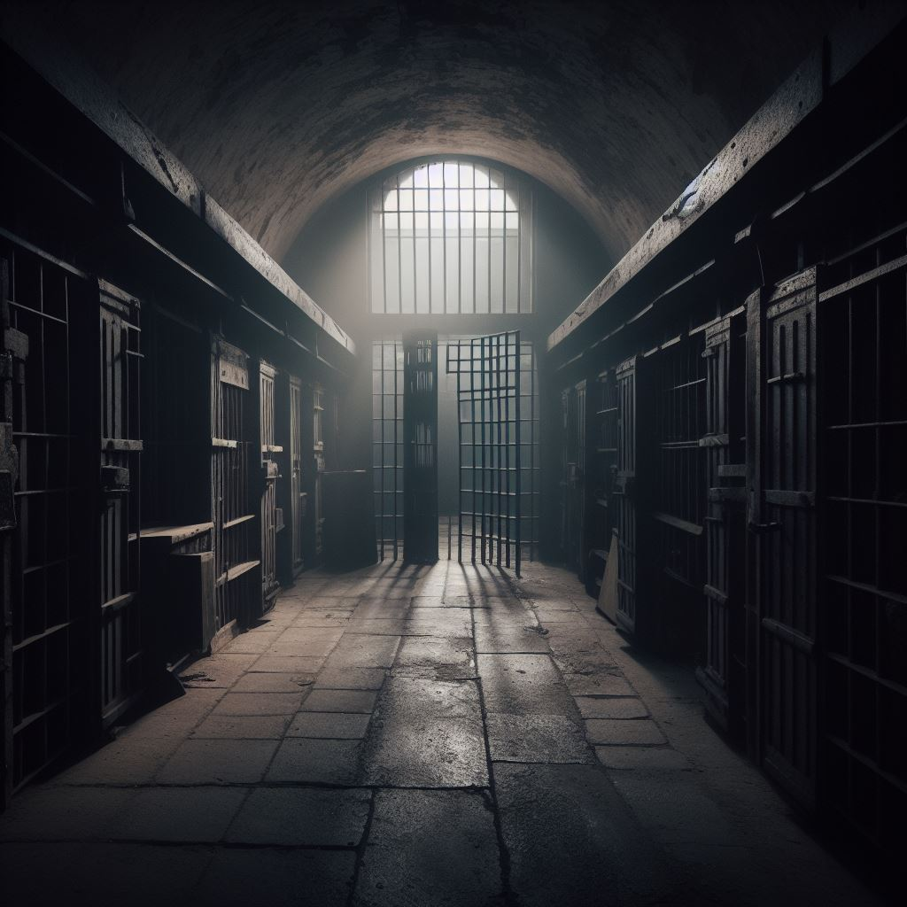

Vous voilà pris au piège, capturés par l'ennemi au sein de la prison du camp de Flossenburg ! Il faut vous échapper de cette cellule au plus vite afin d'espérer sortir indemne du camp. A vous de trouver des solutions pour accéder au couloir depuis votre cellule totalement verouillée.
OPÉRATION CLASSIFIED:
LE CAMP DE FLOSSENBURG
Dès votre arrivée dans le couloir , des soldats montent la garde et surveillent ce lieu avec minutie. Montrez vos talents de discrétion et d'agilité pour vous faufiler sans vous faire remarquer ! Si un garde vous aperçoit, vous perdrez du temps. Ne perdez pas ce que vous avez de plus précieux.
Vos qualités d'espion seront mises à rude épreuve durant cette étape. Le trousseau de clé pour accéder à la caféteria se situe dans la salle des gardiens. Vous avez 10 minutes pour les trouver, sinon les gardes seront avertis de votre présence. Le temps est compté!
C'est l'heure de jouer les cuisniers. La caféteria regorge d'ingrédients qui seront utiles quant à la conception du burger. Un burger ? Oui, le directeur de la prison en raffole ! Le distraire vous permettra d'accéder à son bureau en toute tranquilité. Attention, il mange vite...
Vous avez très peu de temps, mais vous voilà à l'étape la plus importante de la mission. Le 'Classified doc' se trouve quelque part autour vous. Attention, il est très bien protégé par les ennemis. Dès que vous l'avez trouvé, ne perdez pas de temps et trouvez un moyen de vous échapper ! Le bureau du directeur est le meilleur endroit pour s'exfiltrer sans être vu...
Retrouvez nous !